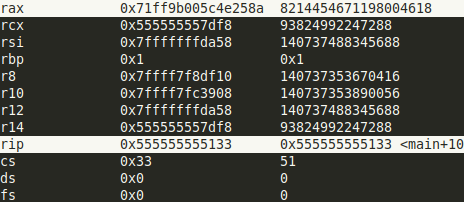
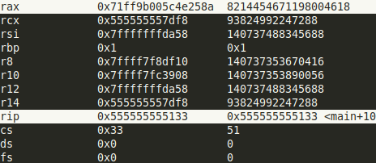

Les registres et l’adressage#
Registres en x86_64#
Il existe plusieurs types de registres dans l’architecture x86_64:
General Purpose Registers
The pointer register
Flag Register
Control Registers
Debug Registers
Model-Specific Register
XMM Registers
x87 Float registers (en pratique, les XMM registers les ont remplacés)
On va principalement parler des deux premieres familles de registres.
General Purpose Registers#
En x86_64 les registres généralistes ont une taille maximale de 64-bits (8 octets). Il existe 16 registres dans cette famille, dont certain ont une utilisation spécifique.
Les registres sont :
rax, rbx, rcx, rdx: version 64-bits des registres: A, B, C, D.
rbp, rsp: version 64-bits des registres de gestion de la pile: BP(base pointer) et SP (stack pointer).
rsi, rdi: version 64-bits des registres pour la copie de données: SI(source index) et DI(destination index).
r8,r9,r10,r11,r12,r13,r14,r15: registres 64-bits introduit avec l’architecture x86_64 (inexistant en architecture x86 (32-bits)).
Les registres hérités de l’architecture x86 (A,B,C,D) peuvent être accédés de différentes manières, on peut faire en sorte d’accéder que certains octets des registres.
Comme le montrent les figures et code suivants, chaque nom permet de spécifier les octets à lire ou à écrire (sachez qu’il y existe une différence de comportement pour les versions 32-bits et 64-bits, même si à premiere vue elles paraissent equivalentes):
; source:
.global main
main:
movabsq $0x71ff9b005c4e258a, %rax
movl %eax, %ebx
movb $0x41, %ah
movb $0x41, %al
movw $0x51, %ax
movl $0x41, %eax
movq $0x51, %rax
movw %ax, %bx
ret
; compilé (objdump):
;main:
; 1129: 48 b8 8a 25 4e 5c 00 movabs $0x71ff9b005c4e258a,%rax
; 1130: 9b ff 71
; 1133: 89 c3 mov %eax,%ebx
; 1135: b4 41 mov $0x41,%ah
; 1137: b0 41 mov $0x41,%al
; 1139: 66 b8 51 00 mov $0x51,%ax
; 113d: b8 41 00 00 00 mov $0x41,%eax
; 1142: 48 c7 c0 51 00 00 00 mov $0x51,%rax
; 1149: 66 89 c3 mov %ax,%bx
; 114c: c3 ret
Les autres registres hérités (SI,DI,SP,BP) ne permettent pas d’accéder leur deuxième octet.

On remarque que les deux instructions
movl $0x41, %eaxetmovq $0x51, %raxse comportent exactement de la même maniére dans ce cas de figure, tout en ayant des tailles différentes: la version avec%eaxutilisant 2 octets de moins.Pour des raisons de performances de calculs en 32-bits (comme expliqué ici) amd a fait en sorte de forcer les 32-bits de poids fort à zéro.
Retenez juste que les instructions sur les 32-bits de poids faible forcent implicitement les 32-bits de poids fort d’un registre 64-bits à zéro.
Références:
Pointer Register RIP#
Le pointer register contient l”adresse mémoire ou la prochaine instruction à exécuter est située. Comme vous pouvez le voir dans les captures suivantes, quand le CPU fini d’exécuter l’instruction
movabsqui est à l’adresse0x5129la valeur de%ripest l’adresse de l’instruction suivantemov %eax, %ebxà l’adresse0x5133.
 

Il faut que vous sachiez que les instructions ont des tailles différentes. elles varient de
1 octetsjusqu’à15 octets. Vu qu’en mémoire les données sont stockés par octets, durant la lecture d’un octet de l’instruction le CPU sait s’il doit interpréter les prochains octets comme faisant partie de cette même instruction grâce aux octets qu’il a déja décodés.Les instructions d’appel et de branchement
jmp,call,ret, … ne font que modifier la valeur de ce fameux registre%rip, en d’autres termes elles changent l’adresse de la prochaine instruction.
Résumé sur les registres#
| 64-bits | 32-bits | 16-bits | 8-bits | Utilisation dans l'ABI Linux AMD64 | Appel de fonction |
|---|---|---|---|---|---|
| rax | eax | ax | ah,al | Valeur de retour | Peut être modifié par la fonction appelée |
| rbx | ebx | bx | bh,bl | Doit être sauvegardé par la fonction appelée | |
| rcx | ecx | cx | ch,cl | 4e argument entier | Peut être modifié par la fonction appelée |
| rdx | edx | dx | dh,dl | 3e argument entier | Peut être modifié par la fonction appelée |
| rsi | esi | si | sil | 2e argument entier | Peut être modifié par la fonction appelée |
| rdi | edi | di | dil | 1erargument entier | Peut être modifié par la fonction appelée |
| rbp | ebp | bp | bpl | Début d'une stack frame | Faire extrêmement attention à son utilisation et à sa sauvegarde |
| rsp | esp | sp | spl | La fin de la pile (top of stack) | Faire extrêmement attention à son utilisation et à sa sauvegarde |
| r8 | r8d | r8w | r8b | 5e argument entier | Peut être modifié par la fonction appelée |
| r9 | r9d | r9w | r9b | 6e argument entier | Peut être modifié par la fonction appelée |
| r10 | r10d | r10w | r10b | Peut être modifié par la fonction appelée | |
| r11 | r11d | r11w | r11b | Peut être modifié par la fonction appelée | |
| r12 | r12d | r12w | r12b | Doit être sauvegardé par la fonction appelée | |
| r13 | r13d | r13w | r13b | Doit être sauvegardé par la fonction appelée | |
| r14 | r14d | r14w | r14b | Doit être sauvegardé par la fonction appelée | |
| r15 | r15d | r15w | r15b | Doit être sauvegardé par la fonction appelée |
Quand vous appelez une fonction il ne faut pas vous attendre à ce que les registres en vert aient gardé leur valeur. Autrement dit, si votre programme assembleur utilise le registre
%rdxil faut qu’il soit sauvegardé (pushq %rdx) avant l’appelcall my_funcet puis restauré après l’appel (popq %rdx).Par contre si une fonction veut utiliser un des registres en rouge, elle doit le sauvegarder avant sa modification et le restaurer avant le retour (
ret).
Vous n’avez pas à apprendre quel registre il faut sauvegardé. Le document sur l’ABI AMD64 présente dans un tableau plus complet dans la section 3.2.3 Parameter Passing citant l’utilisation de chaque registre. Les sources latex officielles sont sur gitlab, vous trouverez un lien pour télécharger le pdf dans le README.
my_func:
pushq %rbx ; sauvegarde %rbx
pushq %r14 ; sauvegarde %r14
; ...
movq %rdi, %rbx ; modifie %rbx
; ...
movq (%rbx), %r14 ; modifie %r14
; ...
addq %r14, %edx ; modifie %rax
; ...
popq %r14 ; restaure %r14
popq %rbx ; restaure %rbx
ret
main:
; ...
movabs $4523902, %rbx
movl $125, %edx ; utilise %eax
movl $45, %edi
pushl %edx
call my_func
; %edx a été changé par my_func
movl %edx, (%rbx) ; la valeur de %rbx est maintenue par my_func
; maintenant, j'ai besoin de mon %edx
popl %edx
movl %edx, 4(%rbx) ; la valeur initiale de %edx est écrite en adresse mémoire %rbx + 4
; ...
ret
Références:
Les flags en x86_64#
Lors de l’exécution de certaines instructions, il est intéressant de garder certaines informations sur le résultat de ces dernières, pour ainsi pouvoir rendre certaines instructions inter-dépendantes. Par exemple, si on veut additionner des nombres de taille supérieure à 64-bits, disons 128-bits il est primordiale de savoir si l’addition des 64-bits de poids faible a générée une retenue pour le 65-bits ou pas pour avoir un résultat correct (
adc). Il existe plein d’autres cas autre que les jump, où l’on veut avoir des informations sur le résultat de l’instruction précédente.En x86_64, on a à notre disposition le registre RFLAGS pour stocker et accéder aux informations décrivant la nature du résultat d’une instruction. En x86(32 bits), le registre se dénommait EFLAGS et à l’âge de l’architecture 16-bits FLAGS. Vous pouvez voir comment ce registre fut étendue avec le changements d’architecture dans la figure ci-dessous.
En pratique, le registre RFLAGS décrit aussi des restrictions d’exécution, ainsi une instruction va changer son comportement, voir lever une exception dépendant des restrictions actives.
Lors du développement de l’architecture, les ingénieurs ont dû choisir quelles informations garder sur le résultat d’une instruction. Pour optimiser un maximum tout en gardant l’utilisation simple, ils se sont limiter à un seul registre, où chaque bit annonce la présence ou l’absence d’un flag décrivant un état. Les bits vides sont réservés et intel ou amd les utilisent comme ils veulent.
Les flags sont divisés en 3 groupes:
Status Flags:
CF(Carry Flag): 1 s’il y a eu une retenue au-delà du bit de poids fort du résultat, sinon 0.
PF(Parity Flag): 1 si le nombre de bits à 1 dans les 8-bits de poids faible est pair, 0 si impair.
AF(Auxiliary Carry Flag): 1 s’il y a eu une retenue depuis le bit 3 vers le bit 4, sinon 0.
ZF(Zero Flag): 1 si le résultat est nul, sinon 0.
SF(Sign Flag): 1 si le résultat est négatif, sinon 0.
OF(Overflow Flag): 1 si le résultat en signé a débordé (changement de signe inattendu) au-delà de la taille du registre destination, sinon 0.
Control Flags:
IF(Interrupt Flag): 1 si les interruptions sont actives, 0 si désactivées.
DF(Direction Flag): 1 pour que les adresses soient décrementées lors des instructions iteratives (
rep), 0 pour incrémenter les adresses.TF(Trap Flag): 1 pour appeler une fonction après chaque instruction permettant d’avoir une exécution pas à pas (debug), 0 pour une exécution classique.
MD(Mode Flag).
System Flags:
IOPL(I/O privilege level).
…
La mise à jour des flags nécessite des tests et des écritures, cela prend du temps, pour ne pas en perdre inutilement, ils ont fait en sorte que certaines instructions ne touchent pas aux flags (le
movpar exemple), et même que les instructions mettant à jour les flags, ne touchent pas à tous les flags, seulement ceux nécessaires, entre autres l’instructionaddne met à jour que les status flags.En général, on dit que les instructions qui ne font que déplacer des données ne modifient pas les flags. Par contre, celles qui effectuent des calculs mettent à jour les flags nécessaires.
Il existe certaines exceptions d’instructions qui calculent mais ne mettent pas à jour les flags, parmi elles :
notetlea.
Il est possible d’accéder au registre RFLAGS via des instructions spéciales :
lahfenregistre les 8-bits de poids faibles de FLAGS dans ah.sahfrécupère les valeurs de SF, ZF, AF, PF, et CF (les 8-bits de poids faible) depuis ah.clc(mettre CF à 0),stc(mettre CF à 1),cmc(inverser CF),cli(mettre IF à 0),sti(mettre IF à 1),cld(mettre DF à 0),std(mettre DF à 1).pushf/popfempile/dépile le registre FLAGS,pushfd/popfdempile/dépile le registre EFLAGS,pushfq/popfqempile/dépile le registre RFLAGS.Les instructions ont le même opcode, tout dépend du mode dans lequel le CPU est.
L’instruction
cmp i1, i2fait une soustractioni2 - i1sans sauvegarder le résultat dans l’opérant destination et met à jour les flags CF, OF, SF, ZF, AF, et PF.L’instruction
test i1, i2fait un bit-wise ANDi2 & i1et met à jour les flags PF, SF, ZF. Elle permet de tester si un registre est nultestq %rax, %rax, elle est plus compacte quecmp $0, %rax.Les instructions de la famille
jccvérifient les flags pour charger l’adresse spécifiée dans le registre rip ou pas (rip pointe vers l’instruction suivante).
Références:
Les modes d’adressage#
Commençons par le commencement : l’adressage, c’est tout simplement la façon dont on dit au processeur « hé, va chercher/mettre cette donnée à tel endroit ! ». C’est comme donner des indications à quelqu’un pour trouver un livre dans une immense bibliothèque.
Modes Directs#
1. Mode d’adressage immédiat#
Le mode le plus simple, c’est l’adressage immédiat. Imagine que tu dis directement « le nombre c’est 42 ». Pas besoin de chercher ailleurs, la valeur est directement dans l’instruction. C’est comme écrire une constante dans votre code.
; AT&T
movq $42, %rax ; Charge la valeur 42 dans rax
addq $10, %rbx ; Ajoute 10 à rbx
2. Mode d’adressage par registre#
L’adressage par registre utilise directement les registres du processeur. C’est la méthode la plus rapide pour manipuler des données.
; AT&T
movq %rbx, %rax ; Copie rbx dans rax
xorq %rax, %rax ; Mise à zéro rapide de rax
3. Mode d’adressage mémoire direct#
Maintenant, parlons de l’adressage mémoire direct, ce mode utilise une adresse mémoire fixe. C’est comme si tu donnais l’adresse exacte d’une maison. Tu dis au processeur « va chercher ce qu’il y a à l’adresse 0x1234 ». C’est utile pour accéder à des variables globales ou des constantes dont on connait l’adresse à la compilation (pas de malloc).
; AT&T
movq value, %rax ; Charge depuis l'adresse 'value'
movq %rbx, target ; Stocke dans l'adresse 'target'
L’adressage mémoire direct utilise une adresse mémoire fixe. Pour les appels absolus, le préfixe * est nécessaire. Ainsi, vous comprendrez pourquoi le code machine ne stocke pas l’adresse absolue de votre label dans un jmp sans *, mais le deplacement vers ce dernier depuis l’adresse actuelle dans rip.
; AT&T
call *absolute_address ; Appel absolu
call relative_address ; Appel relatif (défaut)
Modes Indirects#
Les choses deviennent plus intéressantes avec l’adressage indirect. Ici l’adresse qu’on cherche à accéder n’est pas directement accessible, soit une lecteur ou un calcul sont nécessaires.
1. Mode d’adressage indirect par registre#
L’adressage indirect utilise un registre comme pointeur vers la mémoire. Au lieu de dire « va à telle adresse », tu dis « va à l’adresse qui est stockée dans ce registre ». C’est la base de la manipulation des pointeurs.
; AT&T
movq (%rbx), %rax ; Charge depuis l'adresse contenue dans rbx
movq %rax, (%rcx) ; Stocke à l'adresse contenue dans rcx
2. Mode d’adressage avec déplacement#
Ce mode combine un registre et un déplacement pour calculer l’adresse finale. Parfait pour les tableaux et structures.
; AT&T
movq 10(%rbx), %rax ; Adresse = rbx + 10
movq %rax, 18(%rbx) ; Stocke à rbx + 18
3. Mode d’adressage RIP-relative#
Le mode d’adressage RIP-relative est spécifique à l’architecture x86-64. Ce mode est fondamental pour le Position Independent Code (PIC). Les adresses sont calculées relativement à la position courante du pointeur d’instruction (rip), permettant au code d’être chargé à n’importe quelle adresse en mémoire virtuelle sans nécessiter de relocation. C’est une technique fondamentale pour les bibliothèques partagées. L’assembler (ex:gnu as ou nasm) et le linker se charge de calculer le deplacement et le mettre dans le code machine finale.
; 1. Déplacement constant :
; AT&T
movq 1234(%rip), %rax ; Accède à l'adresse rip+1234
; (1234 octets après la fin de l'instruction courante, i.e le début de l'instruction suivante)
; 2. Symboles :
; AT&T
movq symbol(%rip), %rax ; Accède au symbole de manière relative
; Plus efficace et plus compact que l'adressage absolu
4. Mode d’adressage base + index + échelle + déplacement#
Le mode le plus complet, permettant des calculs d’adresse complexes.
; AT&T
; Format général : déplacement(base,index,échelle)
movq 8(%rbx,%rcx,4), %rax ; déplacement=8, base=rbx, index=rcx, échelle=4
; Adresse = rbx + (rcx*4) + 8
movq 8(%rbx,%rcx), %rax ; déplacement=8, base=rbx, index=rcx, échelle=1 (implicite)
; Adresse = rbx + (rcx*1) + 8
movq (%rbx,%rcx), %rax ; déplacement=0 (omis), base=rbx, index=rcx, échelle=1 (implicite)
; Adresse = rbx + (rcx*1)
Notes sur la performance:
Les modes impliquant des accès mémoire sont généralement plus lents
L’utilisation de l’échelle peut ajouter des cycles supplémentaires
Les registres sont toujours les plus rapides
Références:
Instructions MOVS et préfixes REP#
movsb/movsw/movsd/movsq permet de copier une donnée d’une taille donnée (b:1 octet, w: 2 octets, d: 4 octets, q: 8 octets) depuis l’adresse spécifiée par le registre rsi vers l’adresse spécifiée par le registre rdi. Après chaque opération, ces registres sont automatiquement mis à jour pour pointer vers l’adresse suivante.
La direction de cette mise à jour est contrôlée par le flag de direction (DF) dans le registre RFLAGS. L’instruction cld (Clear Direction Flag) configure le système pour incrémenter rsi et rdi, permettant une copie vers l’avant. À l’inverse, std (Set Direction Flag) les fait décrémenter pour une copie vers l’arrière.
Le préfixe rep transforme une simple instruction de copie en une puissante opération de copie en bloc. Il utilise le registre rcx comme compteur et répète l’instruction autant de fois que spécifié. Par exemple, rep movsb copiera exactement rcx octets de la source vers la destination.
Il existe également des variantes plus sophistiquées : REPE/REPZ et REPNE/REPNZ. Ces préfixes ajoutent une condition (le rcx est toujours utilisé comme compteur) supplémentaire à la répétition. REPE/REPZ continue tant que le flag zéro est actif, tandis que REPNE/REPNZ poursuit tant qu’il est inactif.
section .text
global memory_copy
memory_copy:
; Les paramètres suivent la convention System V AMD64 :
; rdi contient l'adresse de destination
; rsi contient l'adresse source
; rdx contient le nombre d'octets à copier
mov rcx, rdx ; Préparation du compteur
cld ; Configuration pour copie vers l'avant
rep movsb ; Exécution de la copie
ret
Pour des copies de grande taille, il peut être plus efficace d’utiliser movsd ou movsq qui copient respectivement 4 ou 8 octets par opération. Voici une version optimisée qui traite les données par blocs de 4 octets :
section .text
global memory_copy_optimized
memory_copy_optimized:
mov rcx, rdx
shr rcx, 2 ; Division par 4 pour utiliser movsd (4 octets)
cld
rep movsd ; Copie principale par blocs de 4 octets
mov rcx, rdx
and rcx, 3 ; Récupération du reste (0,1,2 ou 3)
rep movsb ; Copie des octets restants
ret
Note sur la performance: Bien que ces instructions soient optimisées au niveau du processeur, leur efficacité dépend du contexte. Pour de très petites copies (quelques octets), une simple séquence de
movpeut s’avérer plus rapide. Pour de très grandes copies, les fonctions système comme memcpy, qui peuvent utiliser des instructions SIMD (Single Instruction Multiple Data) ou des optimisations spécifiques au processeur, sont souvent préférables.